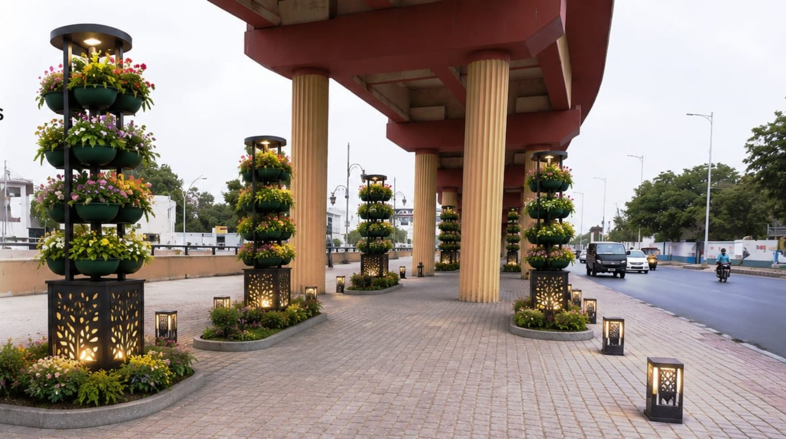
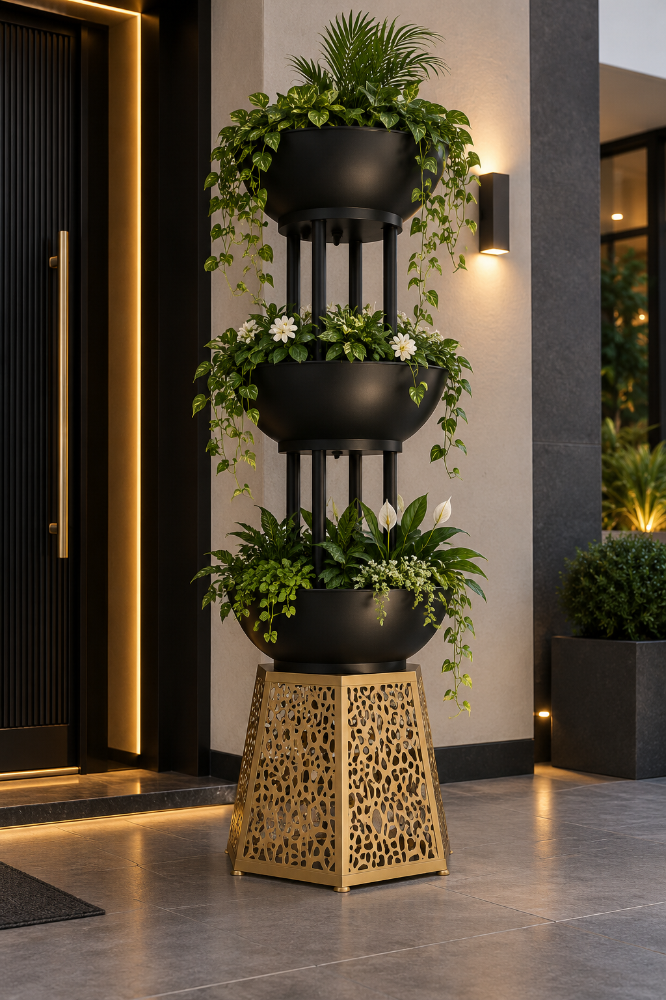

Precision Cutting
Clean, controlled cutting for plates, components and custom metal forms.

Selected fabrication, metal shaping and industrial work showing how JEC turns raw material into purposeful finished pieces.
JEC work is grounded in workshop practice: material preparation, cutting, forming, welding, assembly and finishing. Our portfolio presentation focuses on the fabrication capabilities, process and finished solutions JEC can deliver.

JEC-MTP / DECORATIVE METALWORK
Custom-fabricated multi-level planter stand with a perforated decorative metal base and steel frame. Designed for house entrances, lobbies, offices and other indoor or outdoor spaces.
Enquire about this product ↗These are the practical capabilities behind JEC's work. Explore them here rather than inside the navigation, keeping the Services menu clean and focused.
Clean, controlled cutting for plates, components and custom metal forms.
Forming and shaping metal to suit exact project requirements and dimensions.
Fabricated structures and steel components assembled with strength and purpose.
Individual components joined, aligned and prepared as complete working assemblies.
Practical metalwork and support components for workshop and industrial applications.
Made-to-requirement solutions where standard products are not enough.
Share the dimensions, application or idea. We can start with the requirement and work toward a practical fabrication solution.
Discuss your project ↗